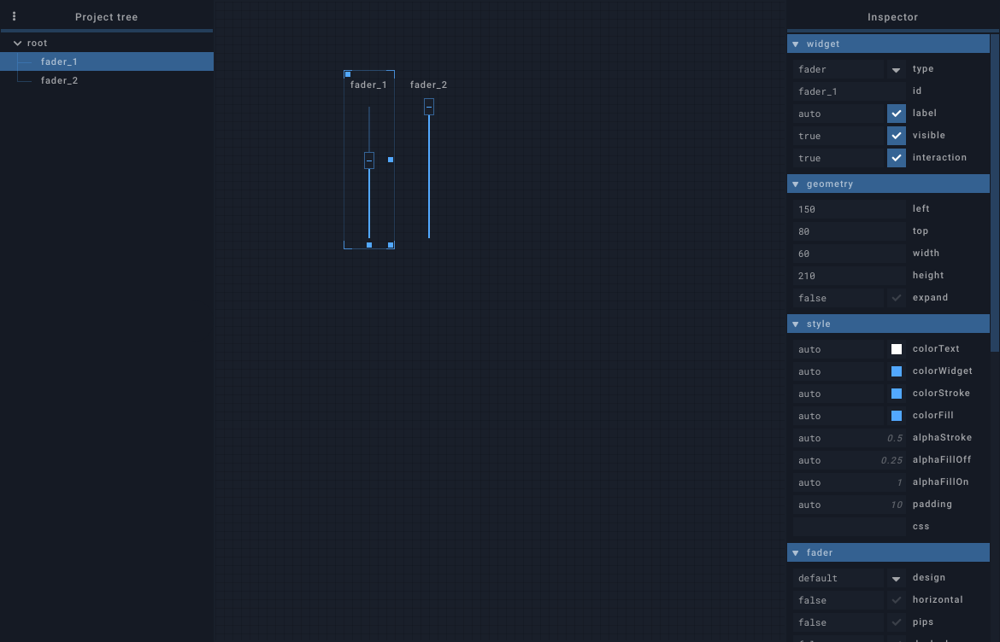

Editor
Widget selection#
Clicking on a widget, on a tab label or on an item in the project tree selects the widgets for editing:
- All its editable properties are shown in the inspector panel
- The corresponding item in the project tree is highlighted
- A selection outline is drawn around the widget
- Dragging / Resizing handles are added to the widget

To interact with a widget directly without selecting it, either use the middle mouse button or hold Shift+Win (Shift+Cmd on Mac).
Menu#
Right clicking on a widget displays a menu with the following actions
Show in tree: show widget in project tree (hidden when clicking in the project tree)Position:Send to back: Send selected widget to back (first of siblings)Send farther: Send selected widget fartherBring closer: Bring selected widget closerBring to front: Bring selected widget to front (last of siblings)
Copy: copy widget's dataCut: copy widget's data and delete selected widgetPaste: paste copied widget in selected containerPaste: paste the widget as isID + 1: increments the id of the copied widget (and all its children) before pastingClone: create a clone widget targetting the copied widget
Add widget: create a new widget in selected containerAdd tab: create a new tab in selected containerExport: export as fragment fileDelete: delete selected tab or widget
Inspector#
Selected widget's properties are displayed and can be modified in the inspector. The properties reference lists the available properties for each widget type.
- Property fields are all multiline (press
shift + enterfor new line). - Properties are written in JSON, with some flexibility brought by the JSON5 format. For example, double quotes around object keys are not mandatory.
- Clicking on a property name spawns a help modal window
- Properties are divided into multiple categories that can be toggled with a click. Alt+Click on a category closes the other categories before toggling selected category.
Some properties (for example onValue) have a special code editor with syntax highlighting and many keyboard shortcuts (available by clicking on the "Help" button). In these properties, pressing enter will not submit pending changes but instead insert a new line at the cursor position (as you would expect in a regular editor). To submit pending changes, press Ctrl+Enter (or ++cmd+enter== on Mac) or click outside the editor.
Widgets can be locked for edition by enabling their lock property. When locked, a widget can't be modified by the editor but it remains possible to delete it or to move it from a container to another in the project tree.
Project tree#
The project tree displays the whole widget structure of the session. Widgets can be reordered or moved to another container with drag-and-drop.
The "Filter" input allows filtering displayed widgets by their id. It's also possible to only display a single type of widget by typing type:fader for example.
Invisible widgets are displayed with a lower opacity and their name in italic. Locked widgets are displayed with a lock icon after their name.
Widget resizing / dragging#
Selected widget can be resized using its south, south-east and east handles. It can be dragged with its north-west handle (holding Alt extends this handle to the widget's size to ease dragging). If the widget's position/size was written in percents, the editor will try to keep using percents.
When the grid is enabled, widget resizing / dragging snaps to a 10 pixel wide grid.
Multi-widgets editing#
Multiple widgets can be edited at once.
- The inspector will only display properties that are shared by all selected widgets
- Selection can only contain sibling widgets (same direct parent)
- Context-menu actions and properties changes apply to all selected widgets
- Resizing / Dragging will affect all selected widgets, relatively the selection's size and position
Keyboard shortcuts#
| Shortcut | Description |
|---|---|
| Ctrl+G | Toggle grid. |
| Ctrl+T | Toggle session tree. |
| Ctrl+I | Toggle inspector. |
| Click | Widget selection. |
| Ctrl+Click | Multi-widget selection. Widgets can be toggled from selection by clicking on them individually. |
| Shift+Click+Drag | Draw a selection rectangle and attempt to select widgets in it. If Ctrl is pressed too, current selection is kept and will be merged with the new one if possible. |
| Ctrl+Z | Undo |
| Ctrl+Y Ctrl+Shift+Z |
Redo |
| Del | Delete selected widgets |
| Ctrl+C | Copy selected widgets |
| Ctrl+X | Cut selected widgets |
| Ctrl+V | Paste clipboard in selected widget |
| Ctrl+Shift+V | Paste and increment id |
| Ctrl+D | Duplicate selected widget |
| Ctrl+Shift+D | Duplicate selected widget and increment id |
| Alt+C+Drag | Paste selection to position |
| Alt+C+Shift+Drag | Paste selection to dragged position and increment id |
| Ctrl+Up Ctrl+Down Ctrl+Left Ctrl+Right |
Move selected widgets (1 grid unit, hold Shift for 5 grid units) |
| Alt+Up Alt+Down Alt+Left Alt+Right |
Resize selected widgets (1 grid unit, hold Shift for 5 grid units) |
| Ctrl+A | Select current widget's siblings and itself |
| Ctrl+Shift+A | Cancel current widget selection |
| Up | Select current widget's previous sibling |
| Down | Select current widget's next sibling |
| Left | Select current widget's parent |
| Right | Select current widget's first child |
| T | Show selected widget in the project tree |
| Home | Send selected widget to back |
| Page Up | Send selected widget farther |
| Page Down | Bring selected widget closer |
| End | Bring selected widget to front |
| F2 | Bring "label" property input into view if selected widget has one |
| H | Hide selection area and widget resize / drag handles while pressed |
| Alt+Mousewheel | change editor zoom |
| Ctrl+0 | reset zoom |
| Shortcut | Description |
|---|---|
| Cmd+G | Toggle grid. |
| Cmd+T | Toggle session tree. |
| Cmd+I | Toggle inspector. |
| Click | Widget selection. |
| Cmd+Click | Multi-widget selection. Widgets can be toggled from selection by clicking on them individually. |
| Shift+Click+Drag | Draw a selection rectangle and attempt to select widgets in it. If Cmd is pressed too, current selection is kept and will be merged with the new one if possible. |
| Cmd+Z | Undo |
| Cmd+Y Cmd+Shift+Z |
Redo |
| Backspace | Delete selected widgets |
| Cmd+C | Copy selected widgets |
| Cmd+X | Cut selected widgets |
| Cmd+V | Paste clipboard in selected widget |
| Cmd+Shift+V | Paste and increment id |
| Cmd+D | Duplicate selected widget |
| Cmd+Shift+D | Duplicate selected widget and increment id |
| Alt+C+Drag | Paste selection to position |
| Alt+C+Shift+Drag | Paste selection to dragged position and increment id |
| Cmd+Up Cmd+Down Cmd+Left Cmd+Right |
Move selected widgets (1 grid unit, hold Shift for 5 grid units) |
| Alt+Up Alt+Down Alt+Left Alt+Right |
Resize selected widgets (1 grid unit, hold Shift for 5 grid units) |
| Cmd+A | Select current widget's siblings and itself |
| Cmd+Shift+A | Cancel current widget selection |
| Up | Select current widget's previous sibling |
| Down | Select current widget's next sibling |
| Left | Select current widget's parent |
| Right | Select current widget's first child |
| T | Show selected widget in the project tree |
| Home | Send selected widget to back |
| Page Up | Send selected widget farther |
| Page Down | Bring selected widget closer |
| End | Bring selected widget to front |
| F2 | Bring "label" property input into view if selected widget has one |
| H | Hide selection area and widget resize / drag handles while pressed |
| Alt+Mousewheel | change editor zoom |
| Cmd+0 | reset zoom |